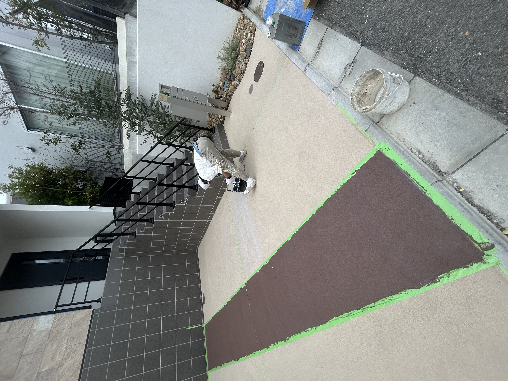
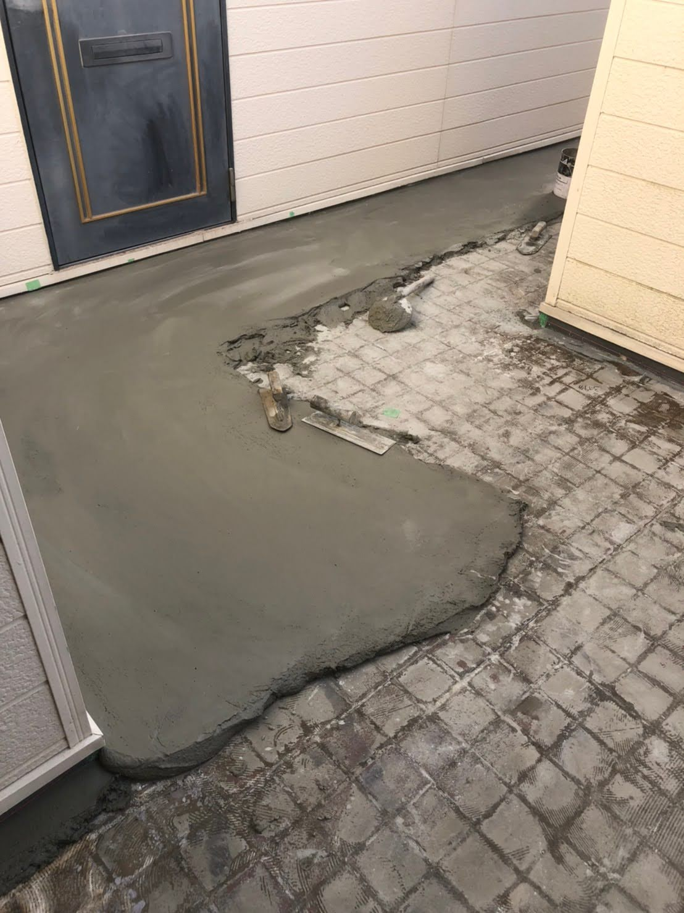
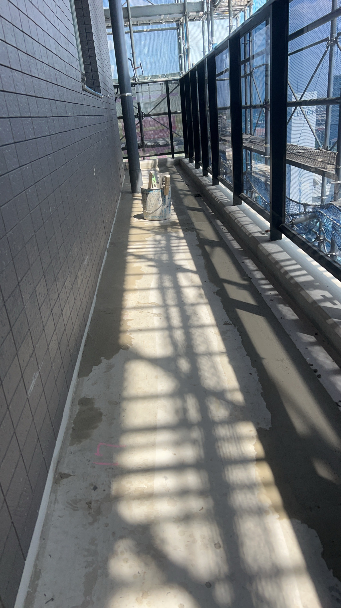
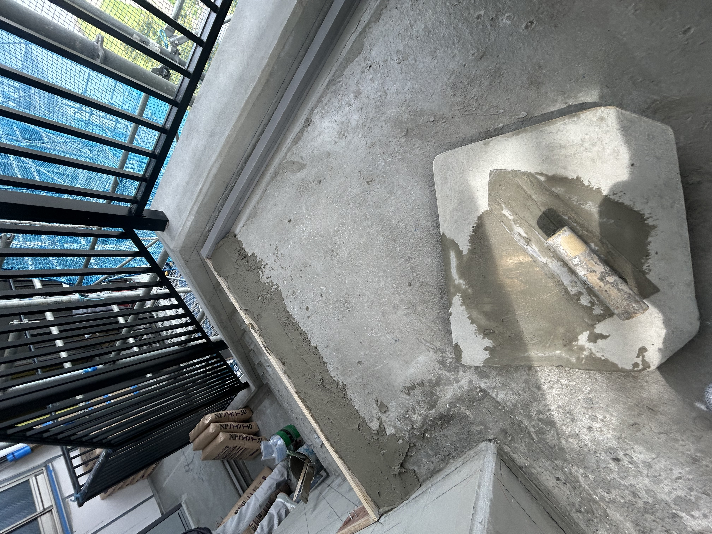
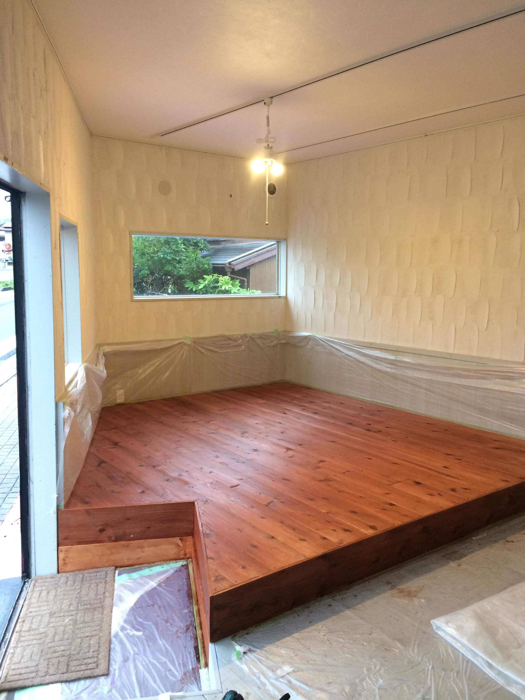
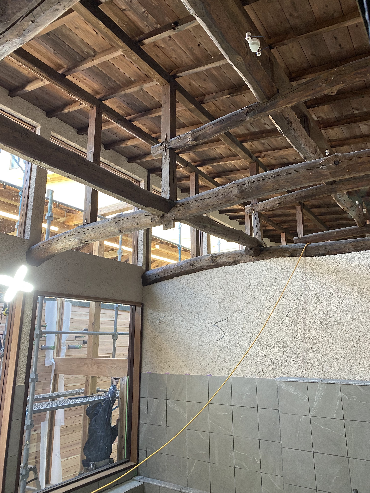

町場・野丁場・内装・外装・土間仕上げ、どんな現場も対応いたします。
丁寧かつスピーディーに施工。外注・応援もお気軽にご相談ください。
前日・当日のキャンセルで現場の進行に支障が出ている
現場のルールを守り、品質を担保できる職人が見つからない
特定の時期・現場だけ増員が必要だが、継続雇用は難しい
野丁場から内装仕上げまで幅広く対応。漆喰・モルタル・ジョリパット等、豊富な施工実績がございます。
安全管理・作業報告・コミュニケーションを徹底いたします。安心してお任せください。
君津市を拠点に、木更津・市原・東京方面まで対応。急な応援依頼にも柔軟にご対応いたします。
一人親方としての参加はもちろん、協力業者との連携により複数名の手配にも対応可能です。






※ エリア外のご依頼もお気軽にお問い合わせください。
現場の状況・必要な人数・工期など、まずはお気軽にお問い合わせください。
お見積りは無料。メールにてご返答いたします。